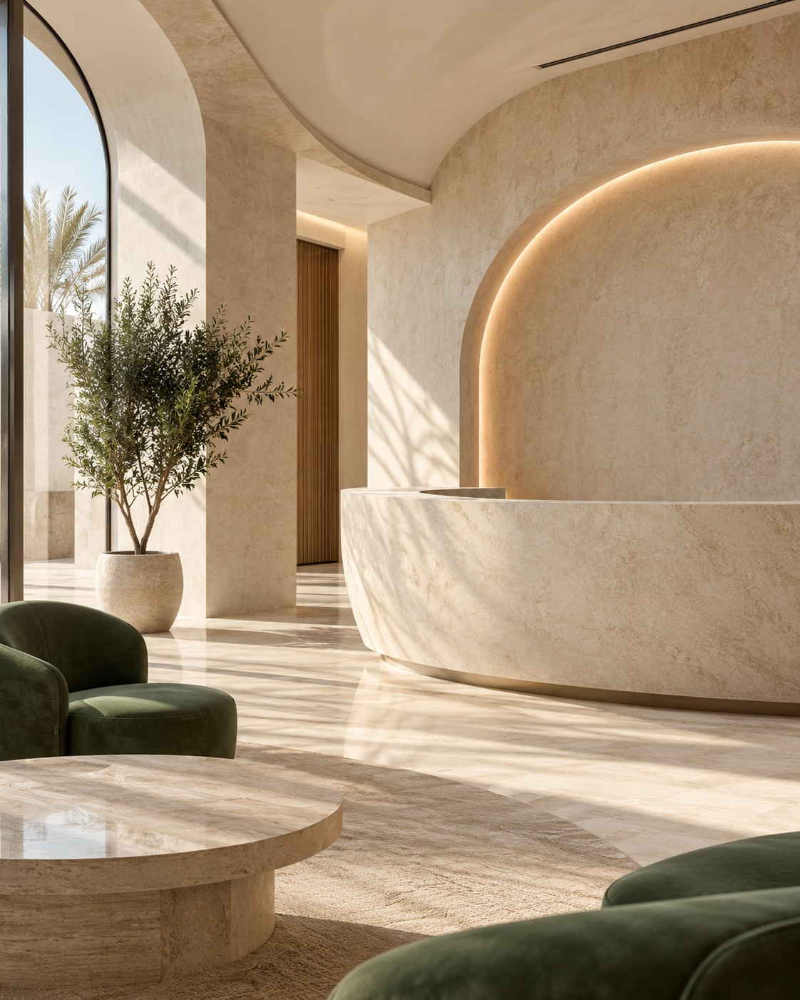

Care that puts
you at ease.
A little more clarity. A little less uncertainty. Start with the information you need to feel comfortable taking the next step.

It starts with
being understood.
Questions are part of every first visit. A useful website should make the essentials easy to find, explain the available services, and give you a clear way to reach the team.
01General practice
A first point of contact for everyday health enquiries. Explore the service, prepare your questions, and contact the clinic to discuss the right next step.
02Family care
Practical information for planning a family visit, from general enquiries to what you may want to bring and discuss with the team.
03Dental care
A clear introduction to routine dental services and a simple way to ask about availability. Individual treatment details belong in a discussion with a qualified professional.
A clear next step.
At your pace.
Choose the service you are interested in and see how a simple visit-planning journey can work.
- 01Choose a service
- 02Prepare your questions
- 03Contact the clinic team